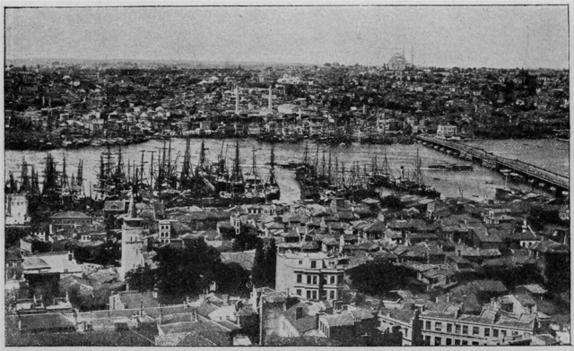
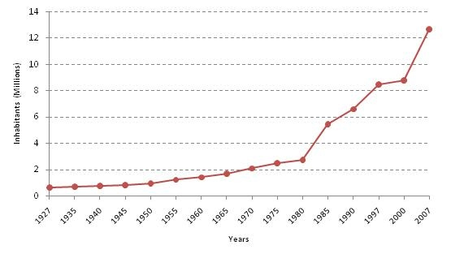

Istanbul u ukupnoj svetskoj istoriji zauzima jako važno mesto. Dovoljno je reći da je bio prestonica tri velika carstva: Vizantijskog, Rimskog i Otomanskog carstva. I danas je, u svakom smislu osim formalnom i političkom, glavni grad Turske.
Istanbul, nekada poznat kao glavni grad glavnih gradova, ima mnogo karakteristika koje ga čine jedinstvenim u svetu. To je jedini grad u svetu koji se prostire na dva kontinenta, i jedini koji je bio prestonica dve imperije, jedne za drugom – hrišćanske i islamske. Nekada prestonica Osmanske imperije, Istanbul je danas poslovni, istorijski i kulturni centar Turske, a njegova lepota leži u sposobnosti da na jednom mestu obuhvati mnoge različitosti. Istanbul je u isto vreme drevan i moderan, religiozan i sekularan, azijski i evropski, mističan i svakodnevan.
Ova raznolikost je jedna od glavnih privlačnosti Istanbula. Stare džamije, palate, muzeji i bazarioslikavaju njegovu raznoliku istoriju. Poznata šoping zona u Taksimu odiše životom i zabavom, dok mirna lepota Bosforskog moreuza, Prinčevskih ostrva i okolnih parkova donosi blagi dodir mira u inače haotičnu metropolu.
Retko koji grad na svetu je svoje ime menjao toliko puta. Štaviše, verovatno nikada nije imao samo jedno ime koje je poštovao ceo svet. Tako je i danas. Iako je zvanično ime grada Istanbul na čemu insistira vlada Turske, u mnogim jezicima grad se i danas zvanično zove drugačije: na grčkom – Konstantinopolis, na nekim slovenskim jezicima, npr. slovenačkom, grad se zove Carigrad, na jermenskom Bolis, na hebrejskom ק<ושטא (Kušta), a kroz istoriju još se javljaju i imena: Vizantion, Novi ili Drugi Rim (Secunda Roma), Augusta Antonina, al-Qusṭanṭiniyah i drugi.
Istanbul je jedini grad na svetu koji se nalazi na dva kontinenta. Ipak, smatra se evropskim gradom iz razloga što se dve trećine, uključujući i centar nalaze na balkanskom odnosno evropskom kopnu. Takođe, Azijski deo grada je znatno mlađi i u svakom smislu siromašniji.
Prostire se na površini na oko 1830 km² i na nadmorskoj visini oko 100m. Nalazi se blizu Severnoanadolijskog raseda koji je odgovoran za nekoliko razornih zemljotresa u skorijoj istoriji. Istraživanja pokazuju da postoji velika verovatnoća da će Istanbul i okolinu zadesiti strahoviti zemljotresi u narednim decenijama.Blizina Mramornog mora donosi i opasnost od cunamija ako dođe do zemljotresa. Loš kvalitet gradnje većeg dela modernog grada preti da eventualne zemljotrese pretvori u razarajuće katastrofe.
Tokom istorije, Istanbul je često rangiran među najvećim gradovima sveta. Oko 500. godine, Konstantinopolj je imao između 400.000 i 500.000 ljudi. Do XIII veka Konstantinopolj je bio u konkurenciji za najveći grad na svetu zajedno sa Bagdadom i kineskim Čananjem. Nikada više nije bio najveći grad na svetu, ali je bio najveći grad u Evropi do XIX veka kada ga je pretekao London. Danas je to jedan od najvećih urbanih sredina u Evropi.
Prema podacima iz jula 2011. Istanbul ima 11,25 miliona čime je to drugi grad u Evropi nakon Moskve sa 11,65 miliona. Prema previđanjima anglomeracija Istanbula će do 2015. da pretekne anglomeraciju Moskve.Turski institut za statistiku procenio je da populacija na dan 31. decembar 2012. iznosi 13.854.740<, čime je to najveći grad u Turskoj gde živi 18% stanovništva države. Godišnji porast stanovnika je oko 3,45% čime je Istanbul najbrže rastući grad među metropolisima u državama koje su članovi Organizacije za ekonomsku saradnju i razvoj. Visoki rast oslikava trend urbanizacije širom zemlje, s obzirom da su posle Istanbula drugi i treći grad po rastu u zemljama OECD-a turski gradovi Izmir i Ankara.
Istanbul je doživeo veliki rast pogotovu u drugoj polovini XX veka, kada je došlo do udesetostručenja u broju stanovnika. Rast je delimično posledica proširenja grada između 1980. i 1985. godine kada je broj stanovnika grada dupliran. Značajan rast je usled velike migracije ljudi sa istoka Turske usled potrage za poslom i boljih uslova života.Broj stranaca u Istanbulu je relativno mali sa samo 42.228 u 2007. Samo 28% stanovnika grada su originalno iz Istanbula.
Izvori: wikipedija.org,sites.google.com.